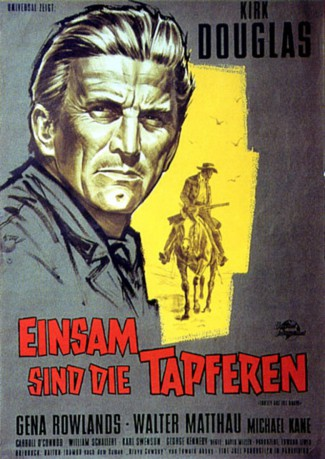

#2080 Einsam sind die Tapferen
Alternativ: Lonely Are the Brave
 
 IMDB-Wertung: 7.7 / 10
IMDB-Wertung: 7.7 / 10  Metascore: 0
Metascore: 0 
Die Tragödie eines Cowboys (Kirk Douglas), der 1953 in New Mexico versucht, seinen inhaftierten Freund (Michael Kane) zu befreien und am Konflikt mit der modernen Gesellschaft und ihrer polizeilich gesicherten Ordnungswelt zu Grunde geht.
Jahr: 1962
Dauer: 107 Minuten
FSK: 12
Land: USA Studio: Universal InternationalTonspuren:
Untertitel: Deutsch,
Auflösung: 1080p (1920x816) Größe: 9328 MB
Genre: Drama, Western
Regisseur: David Miller
Drehbuch: Dalton Trumbo, Edward Abbey
Soundtrack: Jerry Goldsmith
Darsteller:
 Kirk Douglas als John W. Jack Burns
Kirk Douglas als John W. Jack Burns Gena Rowlands als Jerry Bondi
Gena Rowlands als Jerry Bondi Walter Matthau als Sheriff Morey Johnson
Walter Matthau als Sheriff Morey Johnson Carroll O'Connor als Hinton
Carroll O'Connor als Hinton William Schallert als Harry
William Schallert als Harry George Kennedy als Deputy Sheriff Gutierrez
George Kennedy als Deputy Sheriff Gutierrez Karl Swenson als Rev. Hoskins
Karl Swenson als Rev. Hoskins- Lalo Rios als Prisoner
 Dan White als Convict , uncredited
Dan White als Convict , uncredited- Michael Kane als Paul Bondi
- William Mims als First Deputy Arraigning Burns
- Martin Garralaga als Old Man
 Chuck Hamilton als Diner Patron , uncredited
Chuck Hamilton als Diner Patron , uncredited- Tex Holden als Minor Role , uncredited
- George Keymas als Deputy , uncredited
 Harry Lauter als Deputy in Canyon , uncredited
Harry Lauter als Deputy in Canyon , uncredited- Bill Raisch als One Arm , uncredited
- Dan Sheridan als Deputy Glynn, Comic Book , uncredited
- Ray Spiker als Convict , uncredited
- Vince St. Cyr als Navajo Prisoner Who Escapes , uncredited
- Stuart Wade als Desk Sergeant , uncredited
- Charles Wagenheim als Vagrant Convict , uncredited
Datei: X:\HD-Western-1960-1979\Einsam sind die Tapferen (1962, FSK12, 1920x816).mkv seit 30.09.2015
Festplatte: HD Eastern+Western
 Es gibt insgesamt 110 Filme in der Gruppe 'HD-Western-1960-1979'
Es gibt insgesamt 110 Filme in der Gruppe 'HD-Western-1960-1979'